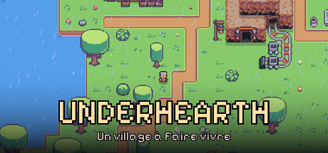
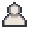
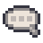
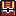
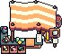

Creuse une mine infinie, strate après strate. Récolte, améliore ton équipement, bâtis l'atelier ultime — et découvre ce qui dort tout en bas.

▶ Regarder l'aperçu du jeuTon village, ta base
Reviens à la surface pour vendre ton minerai, retrouver tes compagnons et investir dans du meilleur matériel avant de replonger.
Chaque coup de pioche compte
Une mine générée sans fin, tap après tap : terre, pierre, granite... chaque strate cache ses propres richesses et ses propres dangers.
Toujours plus loin
Plus tu descends, plus la mine se fait mystérieuse. Des secrets enfouis n'attendent que d'être découverts par les plus téméraires.
La richesse ultime
Au bout du voyage, des veines de cristal et un filon de trésors capables de financer la mine de tes rêves.
Trois envies, une seule pioche
Underhearth est construit autour de ce que tu as vraiment envie de ressentir en creusant.
Devenir riche en creusant
Chaque profondeur rapporte plus que la précédente. Ton minerai devient ton empire.
Construire la mine ultime
Rails de wagonnet, raffinerie, pompe à air, sismographe, foreuse automatique, rat compagnon — un atelier entier à faire évoluer.
Découvrir des secrets enfouis
Veines rares, butins cachés, recoins qu'on ne trouve qu'en creusant là où personne ne regarde.
Un arbre de talents profond
Trois branches, dix rangs chacune : façonne ton style de mineur, de la vitesse pure à l'efficacité économique.

Des mineurs à commander
Recrute des aides autonomes qui creusent pour toi pendant que tu explores plus profond encore.

Creuse entre amis
Mode coopératif en ligne avec chat vocal de proximité — explorez la même mine, ensemble.
Un mineur qui te ressemble
Peau, coiffure, couleur de cheveux, haut, pantalon, chaussures — chaque choix est indépendant. 87 480 combinaisons possibles, et ton allure suit jusqu'en coopératif.
Tout ce qu'il y a dans la mine
La liste complète, sans filtre marketing — ce qui est vraiment dans le jeu.

La mine
- Mine infinie générée par blocs, sans fin
- 5 strates : terre, pierre, granite, cristal, volcanique
- Durabilité individuelle par bloc — chaque coup compte
- Déplacement intelligent pour naviguer la mine creusée
Progression
- Inventaire limité avec dépôt automatique au village
- Sauvegarde automatique de la partie
- Boutique d'améliorations d'équipement
- Arbre de talents : 3 branches, 10 rangs chacune

L'atelier
- Rails de wagonnet — voyage rapide dans la mine
- Raffinerie pour traiter le minerai brut
- Pompe à air, pour creuser plus profond sans danger
- Sismographe — repère les veines avant de creuser
- Foreuse automatique, minage passif
- Rat compagnon, un allié de plus dans l'atelier
Exploration & multijoueur
- Mineurs IA autonomes à recruter et commander
- Veines rares et butins secrets à débusquer
- Coopératif en ligne, avec des amis
- Chat vocal de proximité pendant l'exploration
- Français et anglais, intégration Steam
Un monde à creuser


Ta pioche t'attend.
Underhearth arrive bientôt, encore en développement. Laisse-nous un mot pour être prévenu dès que la page officielle (Steam) sera en ligne.
Me prévenir à la sortie